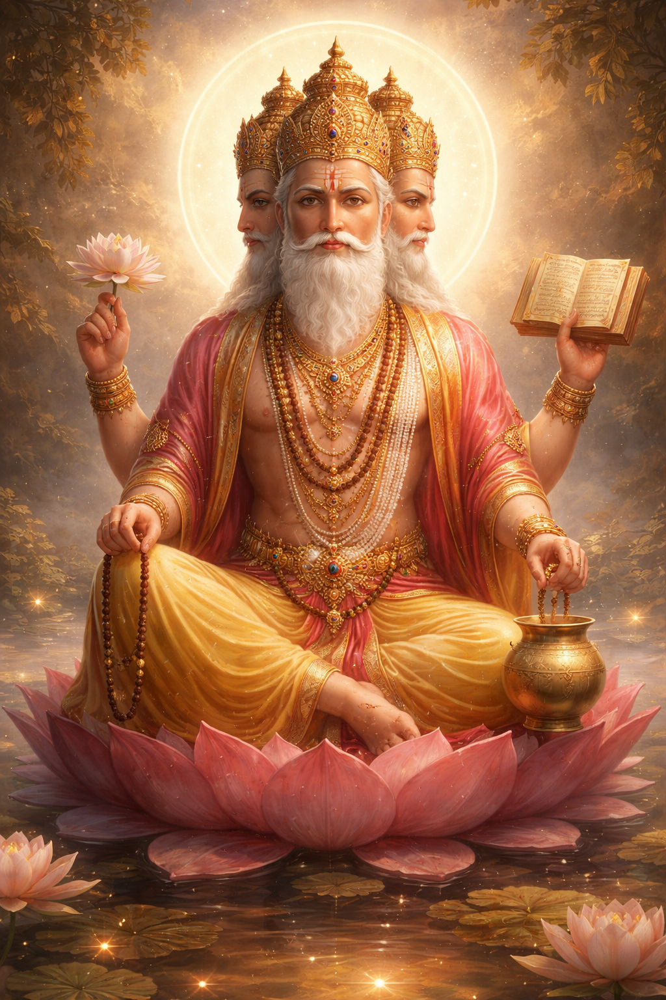

विधि: प्रातः स्नान के बाद स्वच्छ वस्त्र धारण करें। भगवान ब्रह्मा जी का ध्यान करते हुए उन्हें सफेद या पीले फूल, चंदन, और अक्षत (चावल) अर्पित करें। 'ॐ ब्रह्मणे नमः' या गायत्री मंत्र का जाप करें।
शुभ फल: भगवान ब्रह्मा सृष्टि के रचयिता हैं। इनकी उपासना से ज्ञान, बुद्धि और रचनात्मकता में वृद्धि होती है। जो विद्यार्थी या ज्ञानी जन विद्या प्राप्त करना चाहते हैं, उनके लिए ब्रह्मा जी और माता सरस्वती का स्मरण अत्यंत शुभ फलदायी होता है।